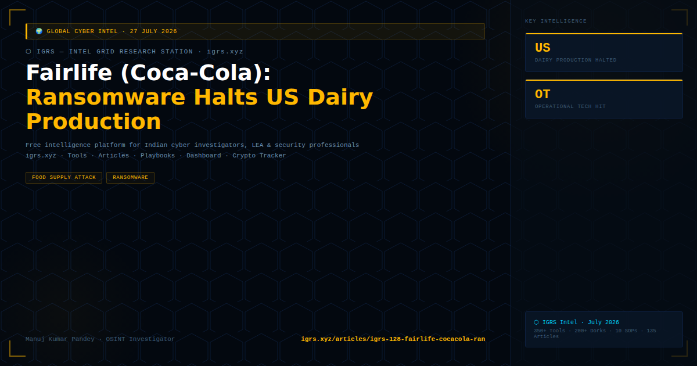

Fairlife, a wholly owned Coca-Cola subsidiary and major US dairy manufacturer, was forced to temporarily halt milk production and operations in the United States in July 2026 following a ransomware attack. The attack demonstrates the expanding scope of ransomware beyond IT systems into operational technology (OT) — directly stopping physical production lines.
| Parameter | Detail |
|---|---|
| Company | Fairlife LLC — wholly owned Coca-Cola subsidiary |
| Industry | Food manufacturing / dairy |
| Impact | US milk production halted temporarily |
| Attack type | Ransomware (group not publicly confirmed) |
| OT impact | Production systems directly affected — physical operations disrupted |
Critical trend: Ransomware groups are increasingly targeting operational technology (OT) — production lines, SCADA systems, and industrial control systems — not just IT networks. When OT is hit, physical consequences follow: production stops, supply chains break.
India's food processing sector (including major dairy cooperatives like Amul, Mother Dairy, and multinational food manufacturers) faces the same OT vulnerability pattern. FSSAI-regulated facilities with digitised production systems are increasingly targeted as ransomware groups discover that food supply chain disruption creates more payment pressure than IT outages alone.
For Indian food/dairy sector: CERT-In's OT/ICS security advisories specifically address industrial control system protection. Air-gap critical production systems from IT networks. NCIIPC has critical infrastructure protection mandates for food sector entities designated as CII operators.